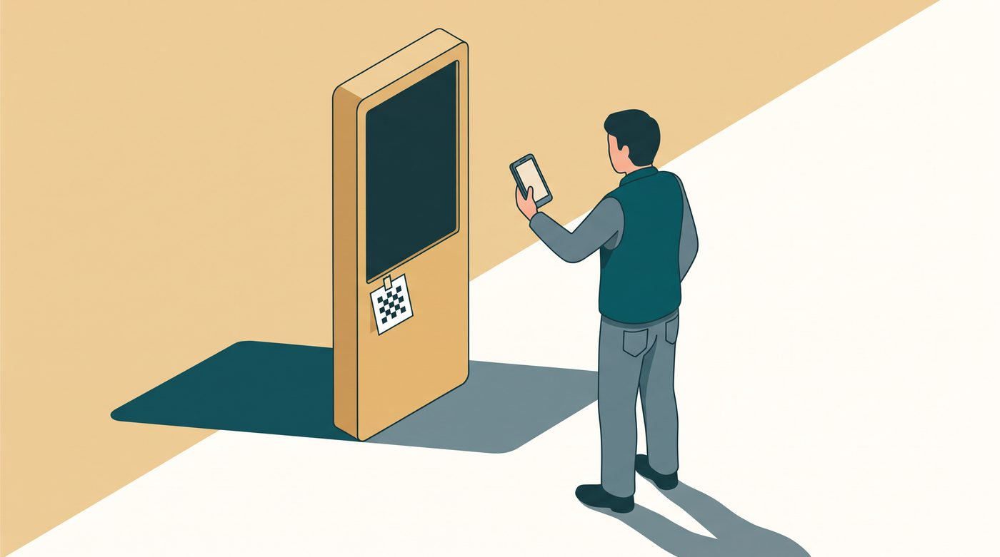
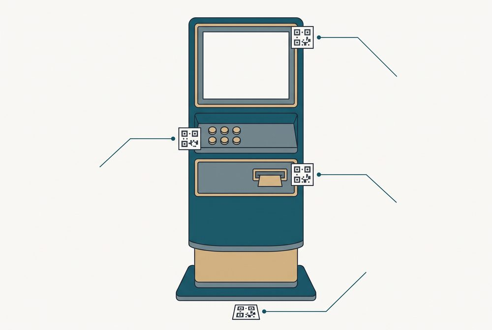

<meta charset="utf-8"><meta name="viewport" content="width=device-width,initial-scale=1"><title>KFA 0.3.1 설치·사용 매뉴얼</title>
<style>
@page{size:A4;margin:0}*{box-sizing:border-box}body{margin:0;background:#e9eef2;color:#172c3d;font-family:"Malgun Gothic",sans-serif;font-size:10.5pt;line-height:1.65}section.page{width:210mm;min-height:297mm;padding:18mm 18mm 16mm;margin:8mm auto;background:white;position:relative;page-break-after:always}section.page:last-child{page-break-after:auto}.eyebrow{font-size:9.5pt;letter-spacing:1px;color:#31516c;font-weight:bold;border-bottom:2px solid #31516c;padding-bottom:7px}h1{font-size:24pt;line-height:1.35;margin:17px 0 19px}h2{font-size:15pt;margin:17px 0 8px}h3{font-size:12.5pt;margin:14px 0 7px}p{margin:8px 0}.lead{font-size:15pt}.box{background:#edf3f7;border-left:4px solid #31516c;padding:11px 16px;margin:15px 0}.note{border:1px solid #977044;padding:10px;color:#553a20}.ok{border-color:#287a55;background:#edf8f2;color:#174c35}.bad{border-color:#a8451b;background:#fff3ed;color:#6a2a10}table{width:100%;border-collapse:collapse;font-size:9.6pt;margin:12px 0}th,td{text-align:left;vertical-align:top;padding:7px;border-bottom:1px solid #c4d0da}th{background:#edf3f7}li{padding-left:3px;margin:6px 0}ol,ul{padding-left:22px}.flow{display:flex;align-items:center;justify-content:space-between;padding:18px 0}.flow b{background:#edf3f7;padding:12px 9px}.shot{display:grid;grid-template-columns:58px 1fr;gap:10px;margin:8px 0}.shot b{background:#17385c;color:white;padding:8px;text-align:center}.shot div{border:1px solid #c4d0da;padding:7px}.tag{display:inline-block;border-radius:99px;padding:2px 8px;font-size:9pt;font-weight:bold;background:#edf3f7}.tag.y{background:#fff1c7;color:#644300}.tag.n{background:#e9f5ed;color:#19583a}img.hero{display:block;width:100%;max-height:78mm;object-fit:cover;border:1px solid #c4d0da;margin:12px 0}pre{white-space:pre-wrap;overflow-wrap:anywhere;background:#edf3f7;padding:12px;font:9.5pt/1.65 Consolas,"Malgun Gothic",monospace}code{font:9.5pt Consolas,"Malgun Gothic",monospace}a{color:#174c75}.url{overflow-wrap:anywhere}.small{font-size:9pt;color:#41566a}footer{position:absolute;left:18mm;right:18mm;bottom:9mm;border-top:1px solid #ccd6df;padding-top:6px;font-size:8.5pt;color:#41566a;display:flex;justify-content:space-between}@media print{body{background:white}.page{margin:0!important;box-shadow:none}a{text-decoration:none}}
</style>
<style>img.hero{height:78mm;object-fit:contain;background:#fafafa}section.page:nth-of-type(7) h1{font-size:21pt}</style>
<section class="page"><div class="eyebrow">KFA 0.3.1 · 처음 쓰는 사람용</div><h1>키오스크 접근성 진단<br>설치·현장 사용 매뉴얼</h1><p class="lead">휴대전화로 자료를 모으고 Windows PC에서 분석·검토·보고합니다.</p><div class="flow"><b>① PC 준비</b><span>→</span><b>② 휴대전화 수집</b><span>→</span><b>③ PC 진단·보고</b></div><div class="box"><b>가장 중요한 원칙</b><br>키오스크에는 아무것도 설치하지 않습니다. 휴대전화는 촬영 앱만 열고, 진단 프로그램은 Windows PC에서 실행합니다.</div><p class="note">이 도구와 보고서는 법정 적합성 인증이 아닙니다. 자동 분석의 ‘위반 의심’은 반드시 사람이 검토해야 하며 실제 사용자 시험과 전문 실측을 대체하지 않습니다.</p><p>발행일: 2026-09-23 · 대상 버전: KFA 0.3.1</p><footer><span>KFA 설치·사용 매뉴얼</span><span>1 / 11</span></footer></section>
<section class="page"><div class="eyebrow">01 · Windows PC 설치</div><h1>압축 풀기 → KFA.exe 실행</h1><ol><li><strong>KFA-0.3.1.zip</strong>을 PC에 받습니다.</li><li>파일을 오른쪽 클릭하고 <strong>모두 압축 풀기</strong>를 누릅니다. ZIP 안에서 직접 실행하지 마세요.</li><li>풀린 폴더의 <strong>KFA.exe</strong>를 더블클릭합니다.</li><li>브라우저 조작판이 열리면 <strong>준비 시작</strong>을 누릅니다.</li><li><strong>측정 마커 카드 열기</strong>를 눌러 인쇄합니다. 인쇄 배율은 100%이고, 카드의 20mm 눈금을 자로 확인합니다.</li></ol><table><tr><th>파일/폴더</th><th>무엇인가요</th></tr><tr><td>KFA.exe</td><td>진단 PC에서 실행하는 프로그램</td></tr><tr><td>사용자매뉴얼.pdf</td><td>지금 보고 있는 설명서</td></tr><tr><td>인쇄물</td><td>마커 카드와 현장 체크리스트</td></tr><tr><td>assets</td><td>가져온 자료, 검토 기록, 결과가 저장되는 폴더</td></tr><tr><td>소스</td><td>개발자·선택 OCR용. 일반 사용자는 열 필요 없음</td></tr></table><div class="note bad"><b>‘마커 카드가 아직 만들어지지 않았습니다’가 나오면</b><br>조작판의 <strong>준비 시작</strong> 또는 <strong>측정 마커 카드 열기</strong>를 다시 누르세요. 0.3.1은 동봉된 인쇄물을 먼저 찾고, 없으면 자동 생성합니다.</div><p>Windows 보호 알림은 파일 출처를 확인한 뒤 처리하세요. 알 수 없는 곳에서 받은 실행 파일의 경고를 무조건 우회하지 마세요.</p><footer><span>KFA 설치·사용 매뉴얼</span><span>2 / 11</span></footer></section>
<section class="page"><div class="eyebrow">02 · 휴대전화 연결</div><h1>‘앱 접속 QR’과 ‘측정 마커’는 다릅니다</h1><table><tr><th>앱 접속 QR</th><th>측정 마커 카드</th></tr><tr><td>휴대전화로 촬영 앱 주소를 여는 일반 QR</td><td>사진 속 실제 길이·면적을 계산하는 검정 무늬 카드</td></tr><tr><td>PC 화면 또는 안내 주소에서 스캔</td><td>인쇄 후 키오스크 옆에 놓고 함께 촬영</td></tr></table><h2>가장 쉬운 접속</h2><ol><li>KFA 조작판에서 <strong>촬영 앱 QR 열기</strong>를 누릅니다.</li><li>휴대전화 기본 카메라로 QR을 읽습니다.</li><li>또는 아래 주소를 Android Chrome / iPhone Safari에서 엽니다.</li></ol><p class="url"><a href="https://coba8002-code.github.io/kiosk-capture/">https://coba8002-code.github.io/kiosk-capture/</a></p><div class="box"><b>인터넷이 막힌 현장</b><br>PC와 휴대전화를 같은 Wi-Fi에 연결하고 조작판의 <strong>같은 Wi-Fi에서 로컬 앱 켜기</strong>를 사용합니다. 공용 사이트와 로컬 서버를 동시에 켤 필요는 없습니다.</div><p class="note">촬영 앱은 앱스토어 설치형 앱이 아니라 웹앱입니다. 첫 접속 후 브라우저 메뉴의 ‘홈 화면에 추가’를 쓰면 다음부터 아이콘으로 열 수 있습니다.</p><footer><span>KFA 설치·사용 매뉴얼</span><span>3 / 11</span></footer></section>
<section class="page"><div class="eyebrow">03 · 측정 마커 사용</div><h1>앱이 필요한 순간과 위치를 먼저 보여줍니다</h1><p>목록에는 각 사진마다 <span class="tag y">측정 마커 필요</span> 또는 <span class="tag n">측정 마커 필요 없음</span>이 표시됩니다. 마커가 필요한 촬영의 버튼을 누르면 카메라보다 먼저 배치 그림과 설명이 뜹니다.</p><table><tr><th>촬영 대상</th><th>놓는 방법</th></tr><tr><td>화면</td><td>베젤에 평평하게, 화면 내용을 가리지 않게</td></tr><tr><td>물리 버튼·키패드</td><td>버튼 바로 옆의 같은 평면에</td></tr><tr><td>투입구·배출구</td><td>측정할 부분과 같은 깊이의 면에</td></tr><tr><td>기기 전체 높이</td><td>기기 옆에 수직으로 세우고 하단을 바닥에</td></tr><tr><td>바닥 활동공간</td><td>바닥에 평평하게 눕혀 전체 공간과 함께</td></tr></table><h3>마커가 필요 없는 S4 사진</h3><p><strong>S4-02 접근 경로</strong>, <strong>S4-03 단차·경사</strong>, <strong>S4-04 눈부심·반사</strong>에는 마커가 필요 없습니다. 단차 높이와 경사도를 숫자로 판정하려면 사진 마커 대신 줄자·경사계로 별도 실측합니다.</p><p class="note bad">마커가 필요한 사진에서 마커를 찾기 어렵거나 사진이 흐리고 지나치게 어두우면 ‘재촬영 권장’이 뜹니다. 현장을 떠나기 전에 빨간 표시를 확인하세요.</p><footer><span>KFA 설치·사용 매뉴얼</span><span>4 / 11</span></footer></section>
<section class="page"><div class="eyebrow">04 · 촬영 앱 사용</div><h1>처음부터 제출까지</h1><ol><li><strong>기기 등록</strong>에서 기기 ID, 위치, 제품 구분을 입력합니다.</li><li><strong>촬영 시작</strong>을 누릅니다. 눌린 버튼은 즉시 색과 모양이 바뀝니다.</li><li>S1~S5를 펼쳐 항목별 안내에 따라 촬영합니다.</li><li>얼굴·카드번호·주민번호가 보이면 휴대전화 안에서 가립니다.</li><li><strong>점주 확인</strong> 질문은 ‘예/아니오/해당 없음’ 중 하나를 누릅니다. 선택한 답에 ✓와 ‘선택한 답’ 문장이 표시됩니다.</li><li><strong>제출 검토</strong>에서 빠진 컷, 미응답, 재촬영 권장, 미입력 기록을 확인합니다.</li><li><strong>번들 내려받기</strong>로 ZIP을 만듭니다.</li></ol><div class="shot"><b>S1-04</b><div><strong>원본 UI 이미지 파일</strong><br>카메라 촬영이 아닙니다. 제작사 화면 원본·스크린샷을 갤러리/파일에서 선택하며 여러 장을 한 번에 넣을 수 있습니다. 마커도 필요 없습니다.</div></div><div class="shot"><b>S4-04</b><div><strong>눈부심·반사 상태</strong><br>사진을 넣으면 촬영 시각이 자동 기록되고, 바로 아래에서 조명 상태와 반사 정도를 선택합니다. 조도(lux)와 광원 위치는 선택 입력입니다.</div></div><p class="note">사진에 ‘재촬영 권장’이 떠도 자동 삭제되지는 않습니다. 이유를 읽고 새 사진을 추가한 뒤 좋지 않은 사진의 ×를 눌러 지우세요.</p><footer><span>KFA 설치·사용 매뉴얼</span><span>5 / 11</span></footer></section>
<section class="page"><div class="eyebrow">05 · 세트별 촬영 뜻</div><h1>무엇을 왜 모으나요</h1><table><tr><th>세트</th><th>수집 내용과 주의점</th></tr><tr><td>S1 화면</td><td>주요 흐름 정면 사진, 문자 확대·고대비 상태, 원본 UI 파일. 반사·흔들림을 줄입니다.</td></tr><tr><td>S2 조작 영상</td><td>시작부터 완료, 제한 시간, 키패드 이동, 취소 흐름. 30fps 이상 권장.</td></tr><tr><td>S3 기기 사진</td><td>전체 높이, 버튼·키패드, 투입·배출구, 하부 공간. 필요한 사진만 마커를 씁니다.</td></tr><tr><td>S4 주변 환경</td><td>전면 활동공간, 접근 경로, 단차·경사, 눈부심. S4-01만 마커가 필요합니다.</td></tr><tr><td>S5 음성</td><td>최소·최대 음량과 개인청취장치. 자동 의미 판정은 아직 지원하지 않아 담당자가 직접 확인합니다.</td></tr><tr><td>S6 문서</td><td>설치 매뉴얼 등 선택 참고 자료.</td></tr></table><h2>사진 계측이 유효하려면</h2><ul><li>마커를 실제 크기 100%로 인쇄합니다.</li><li>마커와 대상은 같은 평면·깊이에 둡니다.</li><li>검정 사각형 전체가 보이고 휘거나 반사되지 않게 합니다.</li><li>경계값에 가까운 결과는 자·캘리퍼·힘 게이지 등으로 다시 측정합니다.</li></ul><p class="note">사진 대비는 원본 화면 색상과 같지 않을 수 있습니다. 원본 UI 파일이 있으면 S1-04에 넣고, 촬영 사진은 조명·반사 영향 확인용으로 함께 보관하세요.</p><footer><span>KFA 설치·사용 매뉴얼</span><span>6 / 11</span></footer></section>
<section class="page"><div class="eyebrow">06 · ZIP 저장과 PC 전달</div><h1>‘준비됨’ 다음에 저장 버튼을 한 번 더 누릅니다</h1><ol><li>제출 검토에서 <strong>번들 내려받기</strong>를 누릅니다.</li><li>파일 이름과 용량 뒤에 <strong>준비됨</strong>이 뜨면 저장 수단을 선택합니다.</li><li>iPhone은 <strong>공유 · 파일 앱에 저장</strong>, Android·PC는 <strong>내려받기</strong>를 권장합니다.</li><li>파일 앱/다운로드 폴더에 실제 ZIP이 있는지 확인합니다.</li><li>기관이 허용한 USB·케이블·드라이브 등으로 진단 PC에 옮깁니다.</li></ol><div class="box"><b>iPhone에서 ZIP이 저장되지 않을 때</b><ol><li>‘공유 · 파일 앱에 저장’을 다시 누릅니다.</li><li>안 보이면 내려받기 링크를 길게 눌러 저장합니다.</li><li>Safari 주소창의 다운로드 아이콘과 파일 앱의 다운로드 폴더를 확인합니다.</li><li>그래도 안 되면 공유 시트로 자신의 메일·승인된 드라이브에 보냅니다.</li></ol></div><p class="note bad">앱은 브라우저가 실제 저장에 성공했는지 알 수 없으므로 ‘저장 완료’라고 단정하지 않습니다. PC가 ZIP을 읽을 때까지 휴대전화의 촬영 자료를 지우지 마세요.</p><footer><span>KFA 설치·사용 매뉴얼</span><span>7 / 11</span></footer></section>
<section class="page"><div class="eyebrow">07 · PC 진단과 검토</div><h1>ZIP 선택 → 분석 → 사람 확인</h1><ol><li>KFA 조작판에서 <strong>촬영 ZIP 또는 폴더 진단</strong>을 누릅니다.</li><li>휴대전화에서 가져온 ZIP 하나를 선택합니다.</li><li>분석이 끝나면 <strong>검토 · 실측 입력</strong>에서 근거 이미지와 측정값을 확인합니다.</li><li>필요한 자·캘리퍼·힘 게이지·소음계 실측값과 오차·측정 범위를 입력합니다.</li><li>‘위반 의심’은 검토자가 근거를 확인한 뒤에만 부적합으로 승인합니다. 반려는 적합이 아니라 미판정입니다.</li><li>검토 결과를 저장하고 <strong>저장한 결과로 보고서 다시 만들기</strong>를 누릅니다.</li></ol><table><tr><th>결과</th><th>뜻</th></tr><tr><td>적합</td><td>기록된 근거와 검사 범위 안에서 기준을 충족</td></tr><tr><td>위반 의심</td><td>자동 분석이 찾은 후보. 사람 확인 전</td></tr><tr><td>부적합</td><td>검토자 승인 또는 담당자가 확인한 실측 결과</td></tr><tr><td>미판정</td><td>사진·실측·오차·검사 범위가 부족하거나 기준 경계</td></tr></table><p class="note">AI는 부적합을 확정하지 않습니다. 또한 AI가 낸 ‘적합’도 그대로 확정하지 않고 검토 대상으로 넘깁니다.</p><footer><span>KFA 설치·사용 매뉴얼</span><span>8 / 11</span></footer></section>
<section class="page"><div class="eyebrow">08 · 보고서 읽기</div><h1>번호 옆 쉬운 설명부터 읽으세요</h1><p>0.3.1부터 보고서의 미판정 표와 40항목 매트릭스에 <strong>항목명</strong>이 함께 나옵니다. 예를 들어 번호만 ‘3.i’로 표시하지 않고, 무엇을 확인하는 항목인지 쉬운 설명을 옆에 표시합니다.</p><table><tr><th>보고서</th><th>용도</th></tr><tr><td>점주용 A</td><td>지금 고칠 것, 분기 내 고칠 것, 추가 검토와 미판정 작업 목록</td></tr><tr><td>담당자용 B</td><td>별표5 40항목 전체, 판정·출처·측정값·다음 담당</td></tr></table><h2>미판정은 오류가 아닙니다</h2><p>미판정 표에는 <strong>항목 번호 + 쉬운 항목명 + 왜 못 정했는지 + 누가 무엇을 해야 하는지</strong>가 나옵니다. 사진으로 알 수 없는 점주 확인이나 전문 실측을 억지로 자동 판정하지 않는 안전장치입니다.</p><p>HTML 보고서를 열고 <strong>Ctrl+P → PDF로 저장</strong>하면 배포용 PDF를 만들 수 있습니다. 새 보고서는 새 폴더에 저장되어 이전 결과를 보존합니다.</p><p class="note">보고서의 ‘촬영 파일 수’는 검사 완료율이 아닙니다. 항목별 근거·검사 범위·미판정 조치를 함께 읽으세요.</p><footer><span>KFA 설치·사용 매뉴얼</span><span>9 / 11</span></footer></section>
<section class="page"><div class="eyebrow">09 · 선택 기능과 개인정보</div><h1>한글 OCR과 외부 AI</h1><h2>기본 진단에는 API 키가 필요 없습니다</h2><p>사진 선별, 결정론적 계측, 실측 비교, 검토·보고서는 KFA.exe만으로 쓸 수 있습니다. 외부 AI는 사진 내용을 추가 선별하는 선택 기능입니다.</p><h3>한글 OCR 개발자 설정</h3><pre>python -m pip install -r requirements.txt
python -m pip install rapidocr
python kfa.py calibrate-ocr
python kfa.py</pre><h3>Anthropic API 선택 설정</h3><pre>$env:ANTHROPIC_API_KEY = "본인의 키"
$env:KFA_L2_MODEL = "계정에서 사용 가능한 모델 ID"
python kfa.py ingest "촬영폴더" --l2 anthropic</pre><p class="note bad">외부 AI를 쓰면 사진이 외부 서비스로 전송될 수 있습니다. 얼굴·카드번호·주민번호를 휴대전화에서 먼저 가리고, 기관의 전송 승인을 확인하세요. API 키는 소스·촬영 ZIP·GitHub에 넣지 않습니다.</p><p>S5 음성의 의미 자동 판정은 아직 제공하지 않습니다. 녹음 전사 원문도 저장하지 않는 것이 원칙입니다.</p><footer><span>KFA 설치·사용 매뉴얼</span><span>10 / 11</span></footer></section>
<section class="page"><div class="eyebrow">10 · 첫 현장 시험 확인표</div><h1>처음에는 2~3장으로 왕복 시험</h1><ol><li>□ KFA.exe 조작판이 열렸다.</li><li>□ 측정 마커를 100%로 인쇄하고 20mm 눈금을 확인했다.</li><li>□ ‘촬영 앱 QR’을 휴대전화로 읽었다.</li><li>□ 기기 ID를 입력하니 ‘촬영 시작’ 버튼이 활성화됐다.</li><li>□ 마커 필요 촬영에서 배치 안내가 카메라보다 먼저 나왔다.</li><li>□ S1-04에서 원본 이미지 여러 장을 선택했고 마커 안내는 나오지 않았다.</li><li>□ S4-04 사진 뒤 조명·반사 상태를 기록했다.</li><li>□ 점주 답변의 선택 버튼에 ✓가 보였다.</li><li>□ 제출 화면에서 재촬영 권장과 누락을 확인했다.</li><li>□ ZIP을 저장하고 파일 앱에서 존재를 확인했다.</li><li>□ PC가 ZIP을 읽고 항목명 포함 보고서를 만들었다.</li><li>□ 원본 ZIP·review.json·보고서를 백업했다.</li></ol><div class="box"><b>시험 기록</b><br>휴대전화 모델 / OS·브라우저 / 키오스크 ID / 날짜 / 소요 시간 / 막힌 단계 / 재촬영 이유 / 측정 장비 / 보고서 폴더를 적습니다.</div><p class="note ok">문제가 생기면 화면의 단계명, 버튼명, 기기·브라우저 버전, 재현 순서, 가능하면 개인정보를 가린 화면 캡처를 함께 남기세요.</p><p class="small">KFA 0.3.1은 소프트웨어 자동 테스트와 정적 접근성 검사를 거치지만, 모든 실기기·네트워크·카메라 조합을 보증하지 않습니다. 최종 현장 정확도는 실제 키오스크 사진과 전문 실측으로 검증해야 합니다.</p><footer><span>KFA 설치·사용 매뉴얼</span><span>11 / 11</span></footer></section>
